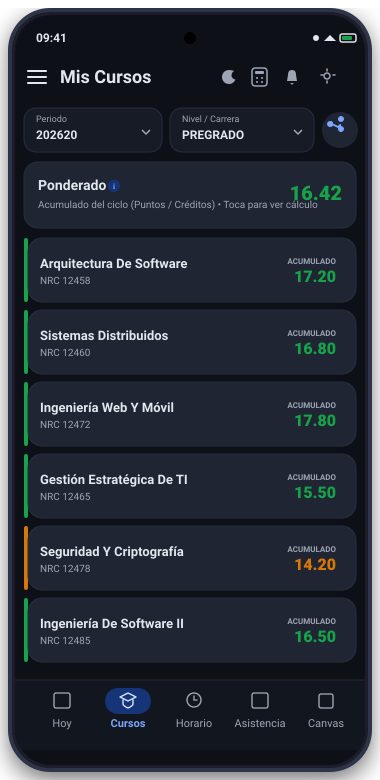
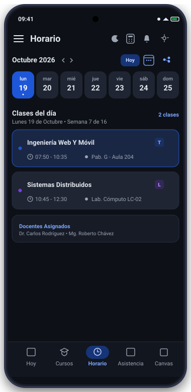
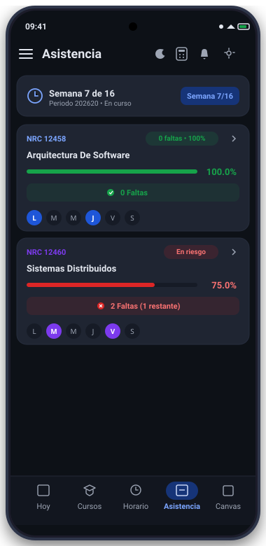
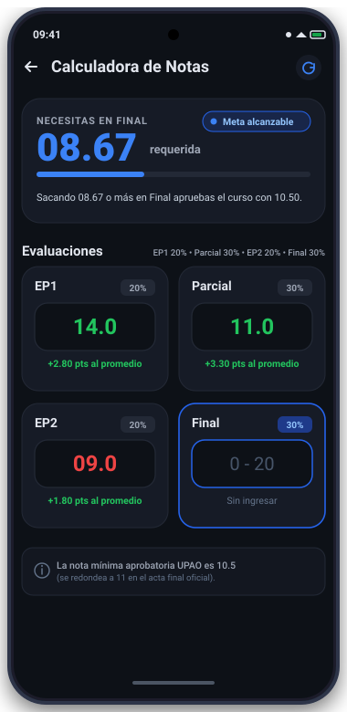
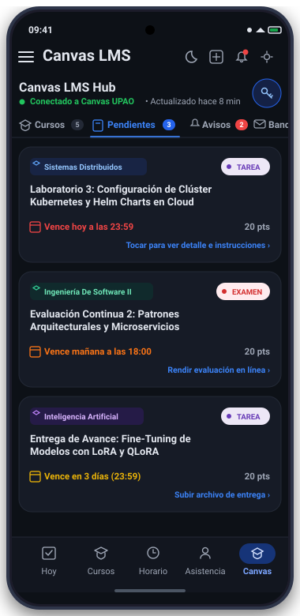

Tu vida universitaria en la UPAO, rápida y sin esperas.
Accede a tus calificaciones en tiempo real con PPS oficial, consulta tu horario con pabellones normalizados, monitorea el límite del 30% de inasistencias y gestiona tus entregas de Canvas LMS directamente en tu celular.
Un cliente móvil autónomo desarrollado por y para estudiantes de la Universidad Privada Antenor Orrego, enfocado en velocidad, fiabilidad y máxima protección de tus datos.
Consultar los portales web universitarios desde el teléfono suele ser lento, requiere múltiples inicios de sesión y falla justo en los momentos críticos de cierre de ciclo o exámenes.
UPAO S nace para resolver este problema mediante una experiencia 100% nativa en Android (construida con Kotlin y Jetpack Compose). La aplicación se conecta de forma directa desde tu teléfono a los servicios de WSO2 SSO, Banner Student Self-Service v9 y Canvas LMS de la UPAO.
Para todos los estudiantes de la UPAO: Diseñada para cualquier carrera y ciclo en los campus de Trujillo y Piura.
Soporte Multi-Cuenta: Alterna entre varias cuentas estudiantiles en el mismo dispositivo sin cerrar sesión.
Caché Resiliente Offline-First: Si el portal universitario se satura o te quedas sin datos, sigues viendo tus notas, horarios y aulas registradas.
Arquitectura Directa y Segura
A diferencia de otras aplicaciones de terceros que envían tus credenciales a servidores externos, UPAO S opera bajo el principio de cero intermediarios:
📱Tu Celular (UPAO S)
Cifrado Local Keystore
⇅ Conexión HTTPS Directa y Segura
🏛️Servidores Oficiales UPAO (Banner + Canvas)
Sin Servidores Terceros
Tus contraseñas se almacenan únicamente en el hardware cifrado de tu dispositivo mediante EncryptedSharedPreferences. Nunca se envían a ningún servidor ajeno.
Módulos Desarrollados
Todo lo que necesitas para tu ciclo
Cada funcionalidad fue construida analizando las necesidades reales de los estudiantes en las aulas y laboratorios de la universidad.
Mis Notas & PPS Oficial
Consulta el desglose completo de evaluaciones por ciclo (EP1, Parcial, EP2, Final) con sus respectivos pesos ponderados. Cómputo exacto del Promedio Ponderado Semestral (PPS) oficial.
● Promedio acumulado progresivo
Horario Semanal Inteligente
Visualización organizada por días de la semana con formato de 12 horas. Fusión automática de horas continuas, normalización de pabellones y nombres de docentes asignados.
● Pabellones, aulas y laboratorios
Control de Asistencia (Límite 30%)
Desglose diferenciado para sesiones de Teoría y Laboratorio. Monitoreo en vivo de faltas acumuladas con semáforo de advertencia antes de llegar al límite de inhabilitación institucional.
● Alerta preventiva de faltas
Calculadora de Notas
Simulador interactivo con la fórmula oficial ponderada de la UPAO. Calcula al instante qué calificación necesitas en tu Examen Final para aprobar el curso con 10.5 o más.
● Simulación en tiempo real
Integración Directa Canvas LMS
Sincroniza tus tareas pendientes, fechas límite de entrega, calificaciones recibidas y estado de envío. Incluye visor nativo de documentos y archivos PDF sin salir de la app.
● Agenda de entregas organizada
Widgets de Escritorio (Glance)
Coloca en tu pantalla principal los widgets oficiales de UPAO S: consulta tu próxima clase con aula y docente, o mantén visible tu PPS actual sin tener que abrir la aplicación.
● Actualización automática
Interfaz de Usuario
Diseñada para una experiencia moderna
Conoce cómo luce la interfaz de UPAO S: interfaz limpia con Jetpack Compose y Material 3, optimizada tanto para modo claro como modo oscuro.
PANTALLA 01 / 06
Dashboard Principal: Hoy
Reúne en un solo lugar la próxima clase del día con aula y pabellón, la semana académica en curso (1 a 16), tu PPS actualizado y tus tareas urgentes de Canvas.
Tarjeta interactiva de clase en curso
Semana académica semestral UPAO
Resumen rápido de tareas pendientes

PANTALLA 02 / 06
Mis Cursos & Ponderado Oficial
Revisa las asignaturas matriculadas del ciclo con desglose por componente (EP1, Parcial, EP2, Final). Observa tu Promedio Ponderado Semestral (PPS) oficial calculado con los créditos exactos.
Tarjeta Ponderado destacada con cómputo oficial UPAO
Tiras de estado por curso y notas acumuladas en vivo
Selector de periodo (202620) y botón compartir boleta

PANTALLA 03 / 06
Horario Semanal Inteligente
Olvídate de descifrar códigos confusos de Banner. El motor de horarios fusiona bloques consecutivos y traduce cada espacio en pabellones y aulas claras.
Fusión inteligente de horas de clase
Nombres de docentes asignados
Selector ágil de lunes a sábado

PANTALLA 04 / 06
Control de Inasistencias (30%)
Mantén tu asistencia bajo control. Visualiza cuántas faltas te quedan antes de alcanzar el 30% que estipula el reglamento universitario para inhabilitar un curso.
Desglose de Teoría y Laboratorio
Indicador visual de riesgo (verde/ámbar/rojo)
Contador explícito de faltas restantes

PANTALLA 05 / 06
Calculadora y Simulador UPAO
Ingresa tus notas actuales o proyectadas y la app te indicará en tiempo real exactamente qué nota necesitas en tu examen final para aprobar con 10.50 (redondeado a 11 en acta oficial).
Grid 2x2: EP1 (20%), Parcial (30%), EP2 (20%), Final (30%)
Detección automática: Meta alcanzable o Puntos asegurados
Aporte exacto en puntos por cada evaluación ingresada

PANTALLA 06 / 06
Canvas LMS Hub Nativo
Integración directa con el API oficial de Canvas UPAO. Consulta tus tareas y exámenes con badges de urgencia, fechas límite exactas y acceso completo a tus cursos sin depender de un navegador.
4 Pestañas: Cursos, Pendientes, Avisos y Bandeja
Alertas de vencimiento urgente en rojo y naranja
Visor nativo de PDFs y entrega de tareas in-app
Instalación Fácil
Cómo instalar UPAO S en tu Android
Al no distribuirse mediante Google Play Store, Android requiere una autorización rápida de seguridad para instalar paquetes APK independientes.
01
1. Descarga el APK
Toca el botón principal "Descargar APK" en esta página. El archivo app.apk comenzará a descargarse de inmediato en tu navegador.
02
2. Permite la Fuente
Si tu teléfono muestra la advertencia "Por seguridad, tu teléfono no tiene permitido instalar apps desconocidas", pulsa en Ajustes y activa la opción "Permitir desde esta fuente" para tu navegador.
03
3. Abre el Archivo
Despliega la barra de notificaciones de Android y presiona sobre la notificación de descarga finalizada, o búscalo en tu carpeta de Descargas de la app Archivos.
04
4. Instala y Conéctate
Presiona "Instalar". Una vez completado, abre UPAO S e inicia sesión con tus credenciales de correo universitario para consultar tus cursos al instante.
Consejo para notificaciones y widgets en segundo plano:
En teléfonos Xiaomi (MIUI/HyperOS), Huawei o Samsung, para que las notificaciones de nuevas notas y los widgets se sincronicen puntualmente sin retrasos del sistema, ve a Ajustes de la app > Ahorro de batería y selecciona "Sin restricciones" o activa el inicio automático.
Especificaciones
Requisitos y Compatibilidad
Conoce los requerimientos técnicos y la nota legal sobre el desarrollo independiente de este cliente.
Ficha Técnica de la App
Nombre del paquete
com.example.upaos
Versión actual
v1.7.1 (Build 17)
Versión mínima de Android
Android 7.0 Nougat (API 24) o superior
Versión recomendada
Android 10+ (API 29 a 37 / Android 15+)
Arquitecturas soportadas
arm64-v8a, armeabi-v7a, x86_64
Tamaño de descarga
~19.7 MB (APK Release Firmado)
Permisos requeridos
Internet (sincronización), Notificaciones
⚖️ Aviso Legal y de Independencia
Proyecto Estudiantil Independiente
UPAO S es un proyecto independiente y de código abierto desarrollado por estudiantes con fines estrictamente académicos y de optimización de la productividad universitaria.
Esta aplicación NO es una aplicación oficial ni está afiliada, avalada, respaldada ni mantenida por la Universidad Privada Antenor Orrego (UPAO), Ellucian Banner o Instructure Canvas.
Todos los nombres comerciales, logotipos institucionales y marcas registradas pertenecen exclusivamente a sus respectivos propietarios legales.
¿Listo para mejorar tu día a día en la UPAO?
Descarga UPAO S hoy mismo y disfruta de una experiencia fluida, rápida y segura en tu smartphone Android.